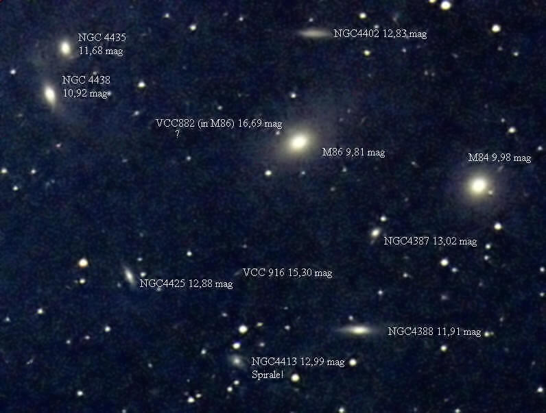
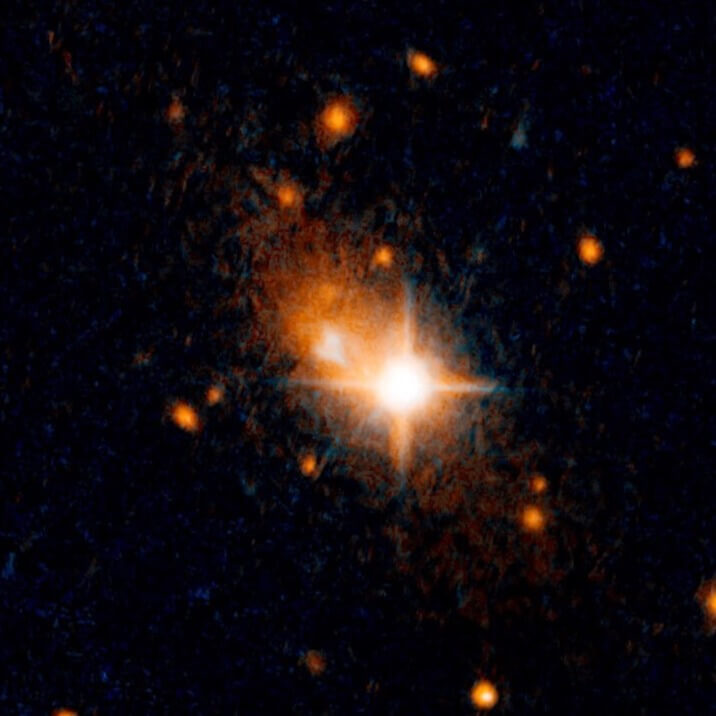

နက္ခတ် ပညာနဲ့ စကြာဝဠာ ကြီးအကြောင်း နည်းနည်း ပါးပါး လေ့လာဖူးတဲ့သူ ဆိုရင် စကြာဝဠာ ထဲက ဂြိုဟ်တွေ လတွေ ကြယ်တာရာတွေ နောက်ပြိး သူ့ထက် ကြီးတဲ့ ဂလက်ဆီတွေ ဘယ်လို ဖွဲ့စည်း တည်ဆောက် ထားသလဲ ဆိုတာ အကြမ်းဖျင်းတော့ သဘောပေါက် ကြမှာ ဖြစ်ပါတယ်။
စကြာဝဠာ ထဲမှာ ရှိတဲ့ ကြယ်တွေကို ဂြိုဟ်တွေက ပါတ်နေကြ ပါတယ်။ တခါ ဒီ ဂြိုဟ်တွေကို ပတ်နေတဲ့ လတွေ ရှိပါသေးတယ်။ ဒီ ကြယ်တွေ စုပြီး တခါ ကြယ်အလုံးပေါင်း သန်း ရာချီ ပါဝင် တဲ့ ဂလက်ဆီ ခေါ် ကြယ်စုကြီးတွေ ဖြစ်လာပါတယ်။
ဒါပေမယ့် ဂလက်ဆီ ကြယ်စုကြီး တွေထဲ မပါဝင်ပဲ အာကာသ ဟင်းလင်းပြင် ထဲမှာ တွယ်ရာမဲ့ လွင့်မြောနေတဲ့ ကြယ်တွေရော မရှိနိုင် ဘူးလား။ ဒါမှာ မဟုတ် ဂလက်ဆီ တွေရဲ့ ဆွဲငင်အားက အလွန် အားကောင်းတာမို့ ဒီ ဆွဲအားကို လွန်ပြီး အာကာသ ဟင်းလင်းပြင်ထဲ ရုန်းထွက်နိုင် လောက်တဲ့ ကြယ် မရှိနိုင်တော့ ဘူးလား။
ဒီလို ဂလက်ဆီ တစ်ခုခုရဲ့ မိသားစုဝင် အဖြစ် မဟုတ်ပဲ ဂလက်ဆီ တွေ ကြားက ဟင်းလင်းပြင်ကျယ် ကြီးထဲ တွယ်ရာမဲ့ မြောချင်တိုင်း လွင့်မြောနေတဲ့ ကြယ်တွေကို Rogue Star သင်းကွဲကြယ် လို့ ခေါ်ပါတယ်။ နောက် အမည် တခုကတော့ Intergalactic Star (ဂလက်ဆီ များအကြားက ကြယ်) လို့လဲ ခေါ်ပါတယ်။
အာကာသ ဟင်းလင်းပြင် ကြီးထဲ ကြည့်လိုက်ရင် ဂလက်ဆီ တစ်ခုနဲ့ တစ်ခု ဆိုတာ အလွန် ဝေးပါတယ်။ ကျွန်တော်တို့ မစ်ကီးဝေး ဂလက်ဆီနဲ့ အနီးဆုံး ဆိုတဲ့ အင်ဒရို မီဒါ ဂလက်ဆီ (Andromeda Galaxy) ကြီးဟာ မစ်ကီးဝေး ကနေ အလင်းနှစ် ၂ သန်းခွဲကျော် ဝေးပါတယ်။
ဒီလို အရမ်း ဝေးကွာပေမယ့် တခါတရံတော့ ဒီ ဂလက်ဆီ တွေဟာ အချင်းချင်း ဆွဲငင်အားကြောင့် နီးကပ်လာပြီး တစ်ခုနဲ့ တစ်ခု ဝင်တိုက်မိ တာမျိုးလဲ ဖြစ်တတ်ပါတယ်။ ဥပမာ ကျွန်တော်တို့ မစ်ကီးဝေး ဂလက်ဆီ နဲ့ အနီးဆုံး အင်ဒရို မီဒါ ဂလက်ဆီတို့ နောက်နှစ်သန်း ၅,၀၀၀ လောက် ကျရင် တိုက်မိကြမယ်လို့ ပညာရှင် တွေက တွက်ချက် ထားပါတယ်။
ဒီလို တိုက်မိတဲ့ အခါ ဂလက်ဆီ တွေ အတွင်းက ကြယ်တွေကတော့ တစ်ခုနဲ့ တစ်ခု ဝင်တိုက်မိ ဖို့ထိ ဖြစ်လာဖို့က အလွန် ခဲယဉ်းပါတယ်။ ဒါပေမယ့် ဒီလို တိုက်မိတဲ့ အတွက် ဖြစ်လာတဲ့ ပြင်းထန်တဲ့ ဆွဲငင်အား မညီမျှမှု တွေရဲ့ သက်ရောက်မှု ကိုတော့ ကြယ်တွေ ခံကြရမှာ ဖြစ်ပါတယ်။

ဒီလို လွင့်ထွက်သွားတဲ့ ကြယ်တွေ အနက်က အချို့သော ကြယ်တွေကတော့ ပင်မ ဂလက်ဆီ ကြီးတွေရဲ့ ပြန်လည် ဆွဲယူခြင်း ခံကြရပြီး မူလ ဂလက်ဆီ တွေ ထဲ ပြန်ဝင် သွားကြပါတယ်။ ဒါမှ မဟုတ်လဲ အခြားဂလက်ဆီက ဆွဲအားပိုများနေရင် ဒီ နောက်ဂလက်ဆီ ထဲ ဝင်ရောက် သွားကြပါတယ်။
ဒါပေမယ့် တခါတလေ မှာတော့ ဂလက်ဆီ တွေ ပေါင်းရာက ဖြစ်ပေါ်လာတဲ့ ဆွဲငင်အားလှိုင်း (Gravitational wave) တွေရဲ့ ရိုက်ခတ်မှုကြောင့် မူရင်း ဂလက်ဆီ (သို့) အခြား ဂလက်ဆီ ထဲကို ပြန်မဝင်နိုင်တော့ပဲ အာကာသ ဟင်းလင်းပြင် ကြီးထဲကို လွင့်ထွက် သွားကြ လိမ့်မယ်လို့ ပညာရှင် တွေက ယူဆကြ ပါတယ်။
ဒီလို ပညာရှင် တွေက ယူဆပေမယ့် ပြင်ပမှာရော ဂလက်ဆီ တွေ ပြင်ပမှာ လွင့်မြောနေတဲ့ တွယ်ရာမဲ့ သင်းကွဲ ကြယ်တွေကို လက်တွေ့ ရှာဖွေ တွေ့ရှိ ထားပြီလား။
၁၉၉၇ ခုနှစ်မှာ ဟတ်ဘယ် အာကာသ တယ်လီစကုပ် (Hubble Space Telescope) ကြီးက သင်းကွဲ ကြယ် တွေကို ပထမဆုံး အကြိမ် အဖြစ် ရှာဖွေ တွေ့ရှိခဲ့ ပါတယ်။ ဒီ့အရင် ကတော့ ဒီလို သင်းကွဲကြယ်တွေ ရှိနိုင် မရှိနိုင် ဆိုတာကို နက္ခတ် ပညာရှင် တွေကြာမှာ အကြီးအကျယ် ငြင်းခုံနေ ခဲ့ကြတာပါ။
ဒီ့နောက် မှာတော့ ဒီလို သင်းကွဲကြယ်တွေ အများအပြား ကို မစ်ကီးဝေး ဂလက်ဆီ အပြင်ဖက်မှာ ရှာဖွေ တွေ့ရှိ လာခဲ့ရပါတယ်။
မစ်ကီးဝေး ဂလက်ဆီနဲ့ အင်ဒရိုမီဒါ ဂလက်ဆီ နှစ်ခု အကြားထဲမှာတင် သင်းကွဲကြယ်ပေါင်း ၆၇၅ စင်း ရှာတွေ့ထားပြီး ဖြစ်ပါတယ်။
ကမ္ဘာနဲ့ အလင်းနှစ် သန်း ၈,၀၀၀ ဝေးတဲ့ နေရာက ဂလက်ဆီ တစ်ခု အနီးက သင်းကွဲ ထွက် နေတဲ့ ဧရာမ တွင်းနက် ကြီး (supermassive blackhole) ကြီး တစ်ခုကိုတောင် ရှာတွေ့ ထားပါသေးတယ်။

ဒီ ပညာရှင် တွေရဲ့ တိုင်းထွာ ချက်အရ ဒီ ကြယ်က မစ်ကီးဝေး ကြီးနဲ့ ဝေးရာကို တစ်နာရီ မိုင်ပေါင်း ၁.၂၅ သန်း အလျင်နဲ့ ပြေးနေတယ် ဆိုတာကို တွေ့ရှိခဲ့ ရပါတယ်။
အလင်းနှစ် ၁၈၀,၀၀၀ အကွာက နောက်ကြယ် တစ်စင်းကတော့ တစ်မိနစ်ကို မိုင် ၁.၄၃ သန်း အလျင်နဲ့ ထွက်ပြေးနေတာကိုလဲ တွေ့ရှိကြရ ပါတယ်။
နက္ခတ် ပညာရှင် တွေကတော့ မစ်ကီးဝေး အပြင်ဖက်မှာ မစ်ကီးဝေး ဂလက်ဆီ ထဲကနေ လွတ်ထွက်သွားတဲ့ သင်းကွဲကြယ်တွေ ဒီ့ထက်မက အများအပြား ရှိလိမ့်မယ်လို့ ယုံကြည် ကြပါတယ်။
Reference:
Do rogue stars in roam in between galaxies? | BBC Sky at Night Magazine
Intergalactic star | Wikipedia